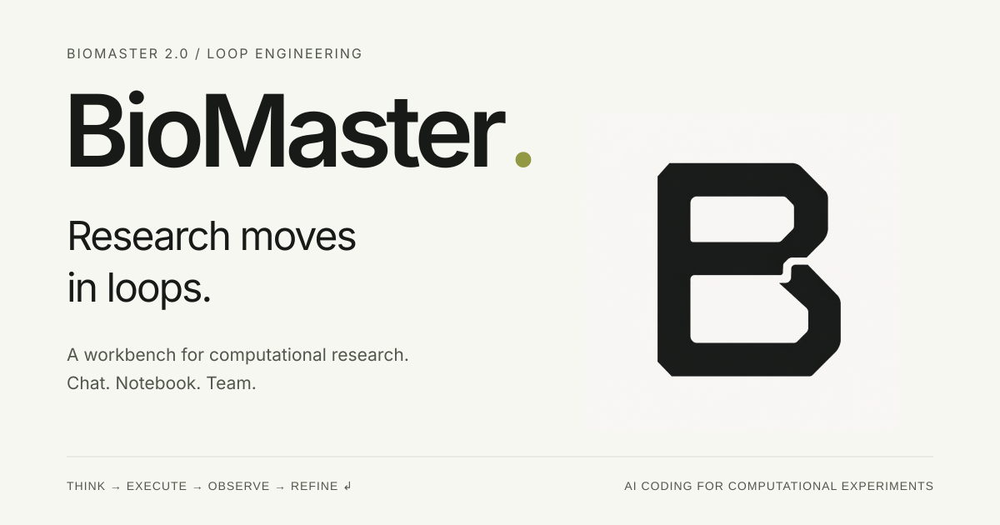

BRAND & PRODUCT / EDITION 01 · 2026
BioMaster.
Research moves
in loops.
一套贯穿研究工作台、官网与宣传材料的视觉语言。
以 Loop B 为核心，让复杂工作清楚、安静地展开。
一个 B。
持续向前的回路。
保留定稿的轮廓、负形与回接切口。
品牌感来自一致的使用，不需要反复重画 logo。
使用规则
- 安全留白
- 保留原图内置留白，外部再留 ≥ 0.25U。紧凑导航按组件间距排布。
- 最小尺寸
- UI 图标槽位建议 ≥ 32 px；宣传标记 ≥ 96 px。16–24 px 使用前需单独验收负形可辨性。
- 名称与组合
- 统一写作 BioMaster。文字与图标垂直居中，间距 8–12 px；版本号独立放在辅助文字中。
- 资产边界
- 现有文件为 1254 × 1254 PNG，无透明通道。深色背景使用黄绿图标底板，不反色、不去底、不滤色。
保留 两个内部窗口与 S 形回接
避免 拉伸、裁紧、倾斜、阴影与发光
避免 在标记内加入文字或装饰箭头
有温度的底色。
有分寸的强调。
黄绿色是品牌识别与当前选择的强调色。
运行结果用独立语义色表达，始终伴随文字或符号。
点击色块复制色值。建议视觉面积：中性色约 90%，品牌强调色约 10%；这是排版指引，不是数据图表的类别限制。
两套主题，同一套语义
浅色适合阅读与发布，深色适合持续工作。通过顶部开关查看所有示例的配色变化。
细分隔线只负责组织信息。可操作控件的轮廓使用更强的 control，避免浅色边框成为唯一操作线索。
一套正文，一套代码
把问题转化为计算实验。
让每一次观察成为下一步的依据。
run_id = "example-001"
英文使用随包提供的 Inter；中文跟随系统苹方／微软雅黑；代码使用系统等宽字体。UI 正文 14 px，长文 16 px，辅助文字不小于 12 px。
600 / 1.0 / −0.06em600 / 1.2 / −0.04em600 / 1.3 / −0.025em400 / 1.6 / 0400 / 1.5 / 04 px 基础网格
组件内 8–16 px，工作区 24–32 px，营销段落 64–96 px。圆角采用 4 / 8 / 12 px；仅浮层使用投影。
让工作成为主角。
导航确定位置，中间承载工作，右侧提供上下文。
通过明确的层级与状态，支持长时间的研究工作。
以下是可交互的视觉样机，内容为示例，不会调用模型或执行分析。这里的切换仅用于对比三个独立项目类型。
Inspect the dataset
Demo: Pause run changes the visible execution state.
Explore sample metadata
How complete is the dataset?
Inspect the metadata before choosing a downstream analysis.
import pandas as pd metadata = pd.read_csv("sample_metadata.csv") metadata.groupby("group").size()
Explain the missing values and suggest what to check next.
Not executedPrompt context contains eligible cells above this one.
Explore and report
Goal: inspect the dataset and prepare a reproducible summary.
Queued01
In progress01
Completed01
Inspect missing values
The analyst is checking field completeness. Review has not started.
Select an issue to inspect its owner, work record, and review state.
224 px 导航栏
+弹性宽度 主工作区 · 建议 ≥ 560 px
+256–288 px 上下文面板
≥ 1200 px 展示三栏；960–1199 px 收起右侧面板；< 960 px 收起导航。移动端让主内容单列，表格局部横向滚动，编辑控件至少保留 44 px 触控区域。
明确的操作。
诚实的反馈。
同一个组件使用同一个尺寸、语义和反馈方式。
结构通过留白与细线组织，边框只出现在需要交互的地方。
操作层级
每个任务区域只保留一个主操作。暂停属于执行控制；删除、终止才使用危险语义。
32 / 40 / 48 px深色主题的主按钮切换为黄绿底深字。禁用状态不可点击；不要用加载动画代替禁用原因。
输入与校验
字段标签始终可见。错误靠近字段，说明具体修改方式，保留用户输入。
radius 4 / padding 12三种状态，各有含义
执行状态、文件时效与科学复核分别表达。命令成功不等于结论正确，文件 Current 不等于审核通过。
The current step is paused. Review the latest output, then continue when ready.
给出下一步
空态说明这里会有什么、如何开始；加载态展示操作对象与可取消性，不虚构完成百分比。
No artifacts yet
Files created during this task will appear here.
Start by describing your deliverable.Reading sample_metadata.csv
An indeterminate status, not an invented progress bar.可点击上方组件查看交互说明；这些示例不会创建或删除真实项目。
数据先于装饰。
图表有单位、图例与来源；状态有文字、上下文与动作。
动效帮助定位变化，不制造“AI 正在思考”的表演。
Metadata completeness
Example data示例数据，仅说明图形样式。颜色、点形与线型共同区分类别；不用于科学结论。
| File | Status | Size |
|---|---|---|
analysis.py | Current | 4.2 KB |
results.csv | Outdated | 128 KB |
report.md | Missing | — |
文件名用等宽字体，数字右对齐。缺失值写“—”，不能展示为 0。多于四组数据时优先分面或加直接标签。
长任务用真实状态。用户滚动阅读时不强制跳到底部。遵循系统“减少动态效果”设置。
同一种气质。
更大的表达空间。
宣传页面放大品牌、压缩文字、增加留白。
保留一个主题、一个视觉主角、一个明确入口。

{kind=link}
{kind=link}
官网叙事顺序
- BioMaster + 一个产品承诺
- 论文或真实产品证据
- Loop + 工作方式
- 贡献者 + 获取产品
论文展示规则
使用已验证的 Patterns 官方封面、期刊名与 DOI。明确标注 BioMaster 1.0，与当前 2.0 区分。
“BioMaster 1.0 was featured on the cover of Patterns.” 不把封面展示写成期刊对 2.0 的评测或背书。
可复用的英文文案
Research moves in loops.
A workbench for computational research.
Think. Execute. Observe. Refine.
下载入口只有真实可用时才出现。未来 GitHub 用于编译版产品与插件分发。
SVG 模板中的文字、背景和线条可编辑，logo 为原 PNG 内嵌，未伪称矢量标记。使用 Inter 可保持文字排版一致。
把规则带进代码。
浅深色值、间距、圆角与动效均有对应变量。
在组件层引用语义 token，避免在业务页面散落色值。
<link rel="stylesheet" href="tokens.css">
<link rel="stylesheet" href="components.css">
<div class="bm-scope" data-theme="light">
<button class="bm-button">
Create project
</button>
</div>JSON 使用本包定义的分组格式。CSS 无框架依赖；应用已有主题加载器时，按开发规范逐项映射后再验收。
可读性是基础规格
已计算验证本规范中的 62 组文字、状态、图表和控件配色。普通文字目标 ≥ 4.5:1，关键非文字边界 ≥ 3:1；整页无障碍仍需结合实际实现验证。